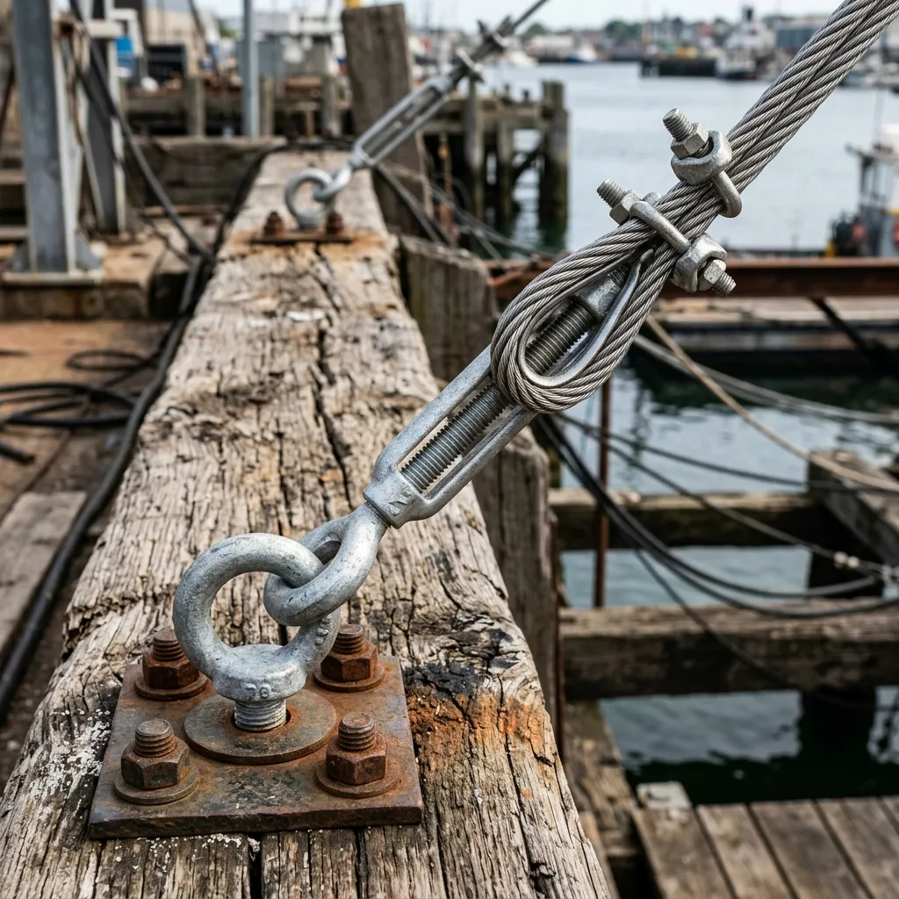
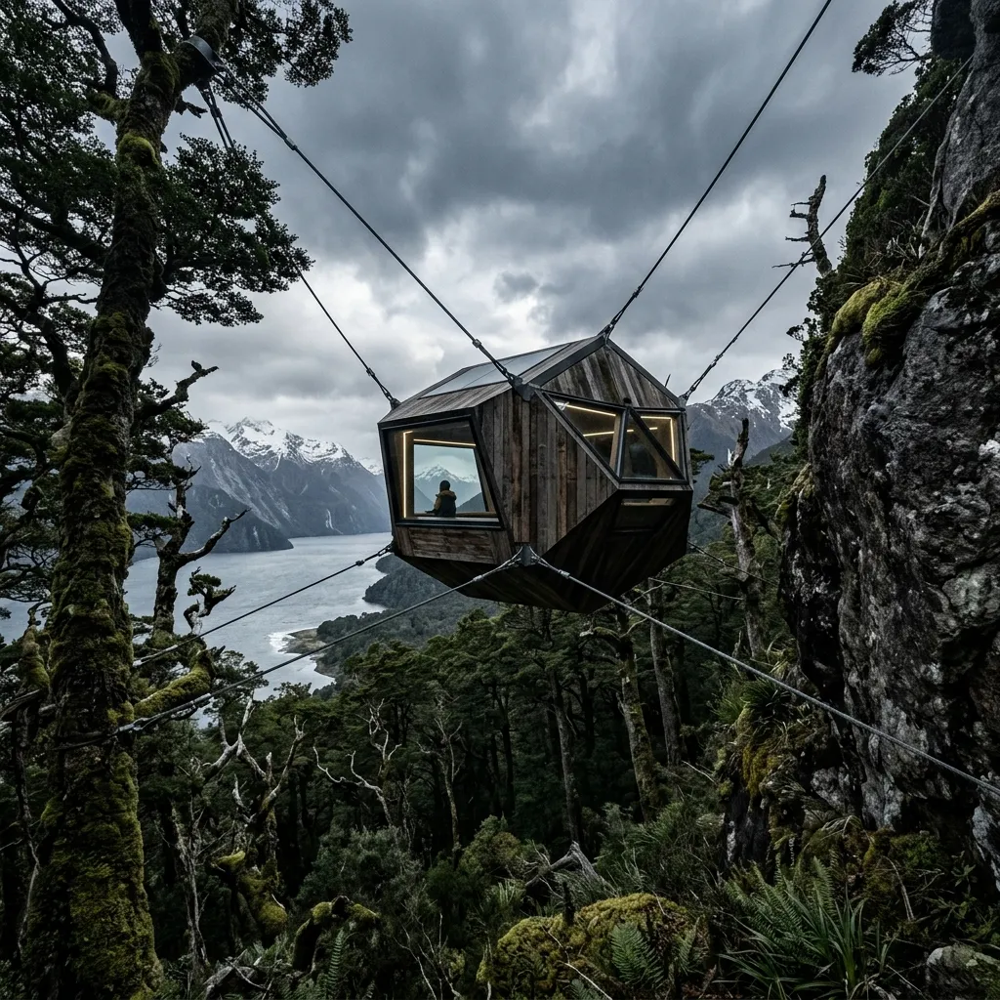

Suspended Architecture for the Furious Latitudes.
We build permanent, non-invasive canopy observatories in the world's most violently windswept sub-polar forests.
The southern sub-polar forests do not grow upward; they grow at an angle dictated by fifty-knot Pacific gales. To inhabit this canopy requires something more stubborn than a tent and more elegant than a bunker. Knot & Westerly designs and hand-builds structural timber observatories engineered specifically for the horizontal forests of Tierra del Fuego. Suspended entirely by high-tensile marine rigging, our pods provide a completely motionless, heated sanctuary within the wild roar of the Magellanic tree line.


The Physics of Inertia in a Sixty-Knot Gale
Every Knot & Westerly structure operates on a principle of dynamic equilibrium rather than rigid resistance. Traditional architecture attempts to fight the wind; our suspended observatories utilise a proprietary multi-point counterweight network that borrows stability from the collective mass of the surrounding grove. By linking eight or more old-growth Nothofagus trees into a singular structural matrix, we create a hyper-stable anchor system that entirely eliminates the sickening sway common to standard treehouses.
The pod itself is a monocoque shell crafted from cold-moulded southern beech heartwood, lined with aerospace insulation and sealed behind double-glazed, impact-resistant ballistic glass. Even when the sub-Antarctic winds register force ten on the Beaufort scale outside, the interior environment remains perfectly level, utterly silent, and heated to a civilised twenty-one degrees. It is an uncompromising workspace designed for individuals who must observe the wild for months at a time without becoming casualties of it.
Material Provenance
At Knot & Westerly, our material philosophy is governed by a singular, unavoidable truth: any substance introduced to the sub-Antarctic canopy must be capable of enduring the very forces that shaped it. We do not fell living timber; instead, we utilise salvaged heartwood reclaimed from century-old whaling slipways. This Nothofagus pumilio, or southern beech, has already spent a hundred years surviving the worst weather on Earth, curing in brine and freezing maritime gales. Its natural rot resistance and exceptional density make it structurally superior to commercially farmed alternatives. To bind this archaic material into a functional monocoque, we employ cold-moulded lamination techniques, securing the structural ribs with heavy, marine-grade 316 stainless steel cable sleeves. These dense, unyielding metal collars provide immense tensile reinforcement without compromising the timber's natural flexion. It is an architectural synthesis of salvaged mass and precision marine engineering, engineered explicitly to outlast the observers housed within it.
Material Provenance →The Observatory Classes
Our suspended observatories are entirely bespoke, yet they fall within three distinct architectural formats, each calibrated for specific operational requirements in high-stress environments. First is The Solitary Blind, a highly compact, single-operator pod intended for short-term meteorological tracking or solitary field recording. It features a minimalist footprint, prioritising discreet insertion over expansive comfort. Second is our flagship installation, The Westerly Pod Mk.IV. This is the standard two-person field laboratory, providing a robust, heated workspace, secure equipment storage, and sufficient provisions to ride out prolonged storm cycles without descending. Finally, we offer The Meridian Pavilion, a substantial, joined double-shell platform designed for extended multidisciplinary expeditions. It incorporates a full galley, distinct sleeping quarters, and a broader observation deck, effectively serving as a permanent, suspended base camp. Regardless of the chosen typology, every structure guarantees absolute stability and profound isolation, anchoring human presence at the very periphery of the habitable world.
Examine TypologiesLimits of Deployment
Knot & Westerly does not operate in temperate zones. We exclusively design and build where the weather is genuinely difficult, deploying our architecture across the most hostile sub-polar latitudes. Our current active installations are distributed along the sheer, wind-battered cliffs of the Beagle Channel, the remote, treeless expanses of the Falkland Islands, and deep within the inaccessible, glacially carved fjords of southern Chile. We refuse commissions in environments that do not require our specific structural expertise. Every observatory is rated to withstand sustained winds of up to eighty knots, with temporary gusts exceeding one hundred. If a proposed site does not experience routine gale-force conditions, driving horizontal precipitation, and prolonged, freezing isolation, it falls outside our operational parameters. We build for the absolute limit of the map.
View Deployment Map →Absolute Non-Interference
True environmental respect in the sub-polar canopy demands absolute non-interference. We maintain a strict zero-impact rigging methodology, ensuring that our architectural presence leaves no trace on the host trees. The foundation of our approach is the proprietary compression-sleeve tree protection system. Under no circumstances do bolts, screws, or invasive anchors enter living wood. Instead, tension is distributed across broad, reinforced structural collars that expand in tandem with the trunk's seasonal growth. Furthermore, our installations are entirely suspended; no concrete footings are poured, and absolutely no machinery touches the fragile, shallow sub-polar topsoil. Access is achieved via kinetic ascenders rather than fixed ladders. When a Knot & Westerly pod is eventually decommissioned and dismantled, the forest canopy retains zero physical memory of its existence, preserving the ancient structural integrity of the surrounding grove.
The Rigging ManualField Dispatches
"The absolute stillness is disorienting. Outside, a sixty-knot gale was tearing branches from the canopy, yet inside the Mk.IV, my calibration instruments registered zero lateral vibration. It is a profound feat of engineering."
"I spent three months painting the winter storms of Tierra del Fuego. The pod offered an unbroken, heated vantage point while the entire forest around me bent sideways. Simply unparalleled."
"Observing the Magellanic woodpecker requires prolonged, silent immersion. This structure provided a dry, silent sanctuary that did not disturb the nesting pairs, even during brutal low-pressure systems."
Commission Parameters
Commissioning a Knot & Westerly structure is an expensive, meticulous process involving heavy maritime logistics and profound environmental assessment. We operate on three distinct pricing tiers corresponding to our typologies, with base costs reflecting the immense complexities of sub-polar construction and transport. Every commission begins with a mandatory, non-refundable site assessment fee, as our engineers must physically evaluate the load-bearing capacity and wind patterns of the chosen grove. Due to our remote location, sea-freight timelines from our Ushuaia slipway to your coordinates must be explicitly factored into the project schedule, often requiring several months of maritime transit. Additionally, clients should anticipate significant winter installation surcharges, as our specialised rigging teams frequently operate under severe, sub-zero conditions to secure the platform before the onset of the brutal spring gales. We do not expedite this process.
Initiate Site CommissionTechnical Responses
- How is cable tension maintained over time?
- Our marine-grade rigging incorporates automated kinetic compensators. These sealed, hydraulic tensioners naturally adjust to the subtle, seasonal expansion of the host trees and the brutal thermal contraction of the steel cables during deep winter freezes, requiring manual inspection only once every three years.
- What are the plumbing solutions for sub-zero conditions?
- We do not rely on traditional water mains. Each pod utilises a self-contained, insulated reservoir system positioned within the heated interior envelope. Greywater is aggressively filtered and vaporised via a low-draw electric thermal core, leaving zero liquid discharge on the forest floor.
- Can the glass withstand high-impact bird strikes?
- Yes. The observatories feature double-glazed, ballistic-rated architectural glass originally developed for deep-water marine vessels. It is entirely impervious to high-velocity impacts from heavy pelagic birds, falling timber, and severe hail, while maintaining exceptional thermal retention.
- How is power generated in low-light environments?
- While solar arrays are insufficient during the sub-polar winter, our primary energy is harvested via micro-hydrokinetic turbines dropped into adjacent fast-flowing streams, supplemented by internal solid-state battery banks that store enough reserve power for sixty days of continuous observation.
- What is the emergency descent protocol during a catastrophic failure?
- Total structural failure is virtually impossible due to our redundant multi-point anchoring. However, should an emergency evacuation be necessary, every pod is equipped with a rapid-deployment abseil spool, allowing operators to descend smoothly to the forest floor within forty seconds, even in complete darkness.